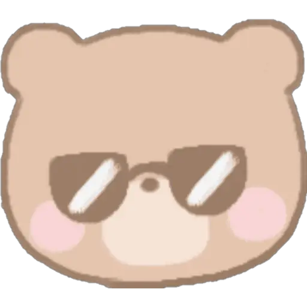

Hi everyone! 
The purpose of this application is to help you or an annoying partner pick out what to eat. Don't you hate it when you ask your partner what they want to eat only for them to say "I don't know..."? Or when they keep saying "nah" when you ask them incessantly do you want this or that? Well now you can use this randomizer to pick something to eat! No more "nah"s! Literally! Just have them come to this site to input the criteria via filters on the home page. Generate your answer or try again! Easy-peasy. But wait, let's say you really want to have another option to pick from. Go over to the add to choices page to add to the database. If you want a cuisine for an answer, click on the generic result button.
Thank you for coming to my site. I hope you have fun with it!
With a shot glass of tears,
Sabrina Baccam